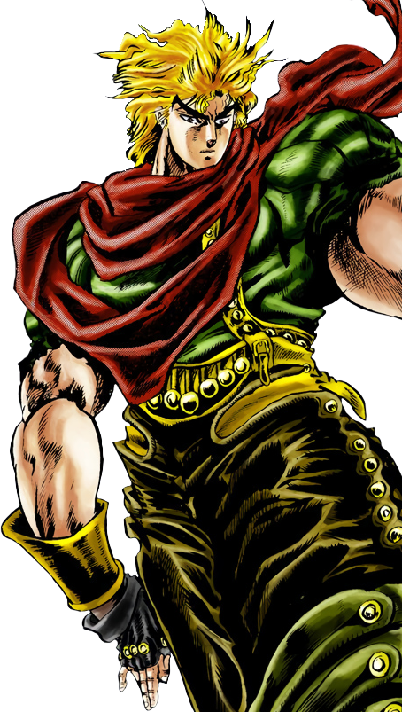

Backstory
Dio Brando's backstory is a tale of tragedy, ambition, and the pursuit of power. Born into poverty in the slums of London, Dio's early life is marked by hardship and abuse at the hands of his father, Dario Brando. Despite the harsh conditions of his upbringing, Dio possesses an innate intelligence and cunning that sets him apart from his peers. Dio's life takes a fateful turn when he is taken in by George Joestar, a wealthy nobleman, following a carriage accident that claims the life of his father. As Dio becomes acquainted with the Joestar family, he sees an opportunity to rise above his station and seize control of their fortune. However, beneath his charming exterior lies a ruthless and manipulative individual with grand ambitions.
Dio's quest for power leads him to discover the mysterious Stone Mask, an ancient artifact with supernatural properties. Intrigued by its potential, Dio becomes obsessed with unlocking its secrets and harnessing its power for himself. Through careful study and experimentation, Dio unlocks the true nature of the Stone Mask, which grants him immortality and vampiric abilities upon activation.
Armed with his newfound powers, Dio sets out to achieve his ultimate goal: to conquer the Joestar family and seize control of their fortune. However, his plans are thwarted by Jonathan Joestar, the kind-hearted son of George Joestar, who sees through Dio's deception and vows to stop him at all costs. The discovery of the Stone Mask serves as a turning point in Dio's life, transforming him into a powerful and malevolent force that poses a grave threat to humanity.

